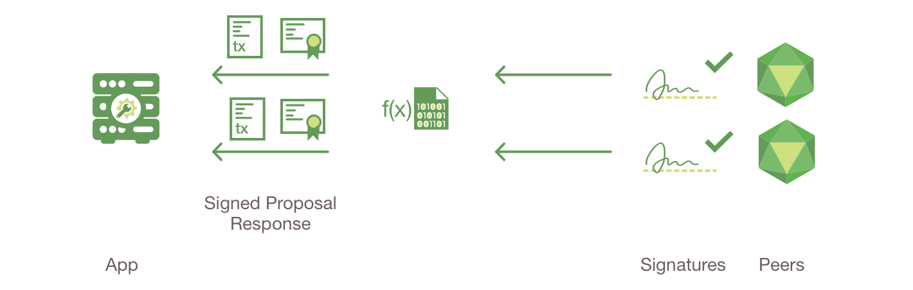

Transaction Flow
This document outlines the transactional mechanics that take place during a standard asset exchange. The scenario includes two clients, A and B, who are buying and selling radishes. They each have a peer on the network through which they send their transactions and interact with the ledger.

Assumptions
This flow assumes that a channel is set up and running. The application user has registered and enrolled with the organization's certificate authority (CA) and received back necessary cryptographic material, which is used to authenticate to the network.
The chaincode (containing a set of key value pairs representing the
initial state of the radish market) is installed on the peers and
instantiated on the channel. The chaincode contains logic defining a set
of transaction instructions and the agreed upon price for a radish. An
endorsement policy has also been set for this chaincode, stating that
both peerA and peerB must endorse any transaction.

- Client A initiates a transaction
What\'s happening? - Client A is sending a request to purchase radishes.
The request targets peerA and peerB, who are respectively
representative of Client A and Client B. The endorsement policy states
that both peers must endorse any transaction, therefore the request goes
to peerA and peerB.
Next, the transaction proposal is constructed. An application leveraging a supported SDK (Node, Java, Python) utilizes one of the available API\'s which generates a transaction proposal. The proposal is a request to invoke a chaincode function so that data can be read and/or written to the ledger (i.e. write new key value pairs for the assets). The SDK serves as a shim to package the transaction proposal into the properly architected format (protocol buffer over gRPC) and takes the user's cryptographic credentials to produce a unique signature for this transaction proposal.

- Endorsing peers verify signature & execute the transaction
The endorsing peers verify (1) that the transaction proposal is well formed, (2) it has not been submitted already in the past (replay-attack protection), (3) the signature is valid (using MSP), and (4) that the submitter (Client A, in the example) is properly authorized to perform the proposed operation on that channel (namely, each endorsing peer ensures that the submitter satisfies the channel\'s Writers policy). The endorsing peers take the transaction proposal inputs as arguments to the invoked chaincode\'s function. The chaincode is then executed against the current state database to produce transaction results including a response value, read set, and write set. No updates are made to the ledger at this point. The set of these values, along with the endorsing peer's signature is passed back as a "proposal response" to the SDK which parses the payload for the application to consume.
{The MSP is a peer component that allows them to verify transaction requests arriving from clients and to sign transaction results(endorsements). The Writing policy is defined at channel creation time, and determines which user is entitled to submit a transaction to that channel.}

- Proposal responses are inspected
The application verifies the endorsing peer signatures and compares the proposal responses to determine if the proposal responses are the same. If the chaincode only queried the ledger, the application would inspect the query response and would typically not submit the transaction to Ordering Service. If the client application intends to submit the transaction to Ordering Service to update the ledger, the application determines if the specified endorsement policy has been fulfilled before submitting (i.e. did peerA and peerB both endorse). The architecture is such that even if an application chooses not to inspect responses or otherwise forwards an unendorsed transaction, the endorsement policy will still be enforced by peers and upheld at the commit validation phase.

- Client assembles endorsements into a transaction
The application "broadcasts" the transaction proposal and response within a "transaction message" to the Ordering Service. The transaction will contain the read/write sets, the endorsing peers signatures and the Channel ID. The Ordering Service does not need to inspect the entire content of a transaction in order to perform its operation, it simply receives transactions from all channels in the network, orders them chronologically by channel, and creates blocks of transactions per channel.

- Transaction is validated and committed
The blocks of transactions are "delivered" to all peers on the channel. The transactions within the block are validated to ensure endorsement policy is fulfilled and to ensure that there have been no changes to ledger state for read set variables since the read set was generated by the transaction execution. Transactions in the block are tagged as being valid or invalid.

- Ledger updated
Each peer appends the block to the channel's chain, and for each valid transaction the write sets are committed to current state database. An event is emitted, to notify the client application that the transaction (invocation) has been immutably appended to the chain, as well as notification of whether the transaction was validated or invalidated.
Note: See the [swimlane]{role="ref"} diagram to better understand the server side flow and the protobuffers.